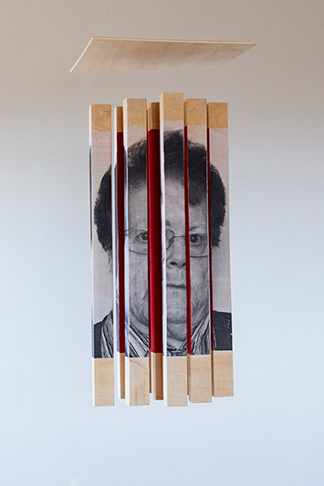
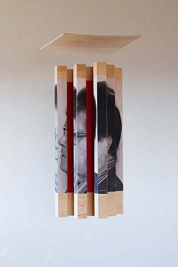
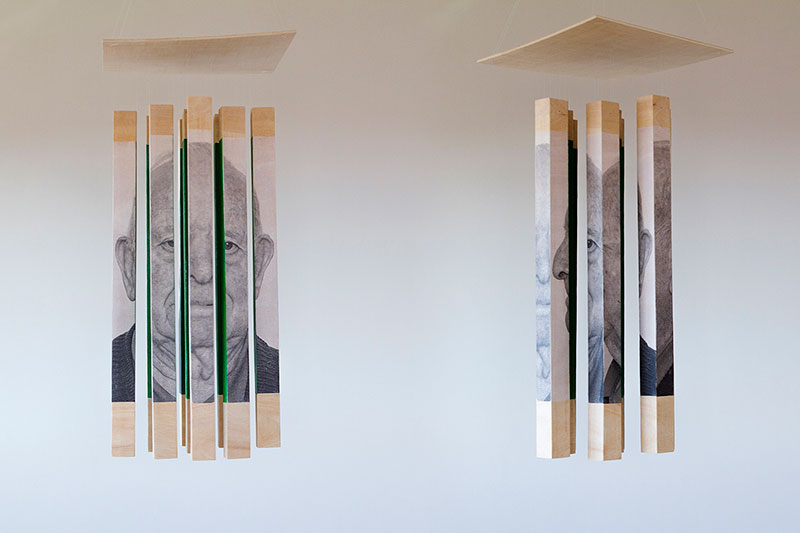
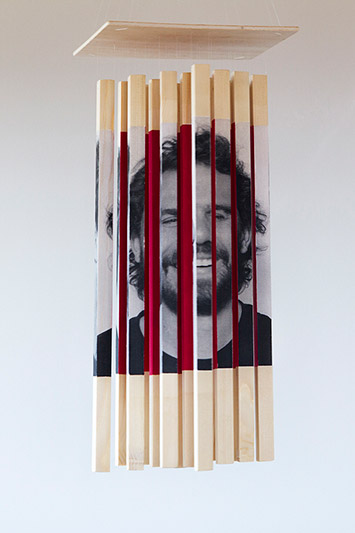
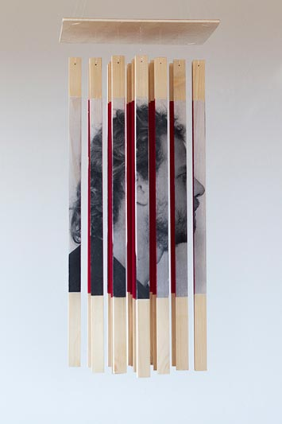
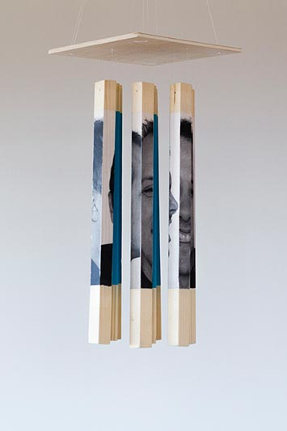
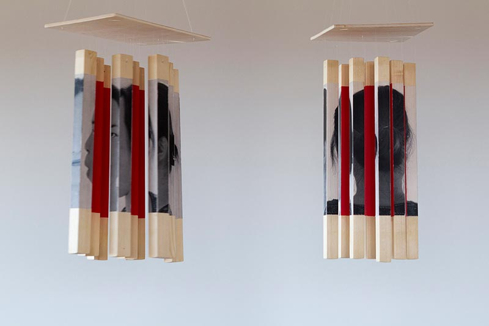
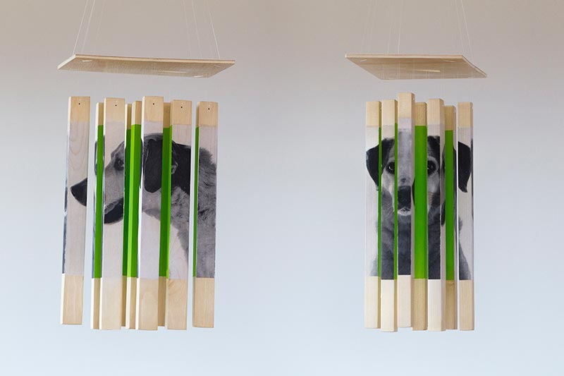

CAPS es una serie de retratos volumétricos con cualidades formales más cercanas a la escultura.
Durante la sesión de fotos se pidió a la persona que pensara en una situación o sentimiento y le asociara un color (emulando el “yo interior” o pensamiento). Esto, junto con retratos en blanco y negro tomados desde diferentes ángulos de la persona, forman cada pieza.
El proyecto se aleja de la tecnología para resaltar la sencillez y la sinceridad de cada pieza tridimensional, a la vez que sorprende al espectador invitándole a jugar con el movimiento y los puntos de vista. Conforme la estructura va oscilando vemos como las fotografías generan volumen.
CAPS reflexiona sobre las relaciones humanas, la necesidad de mostrar ciertas caras de uno mismo y de ocultar otras.
Video presentación CAPS #1:







